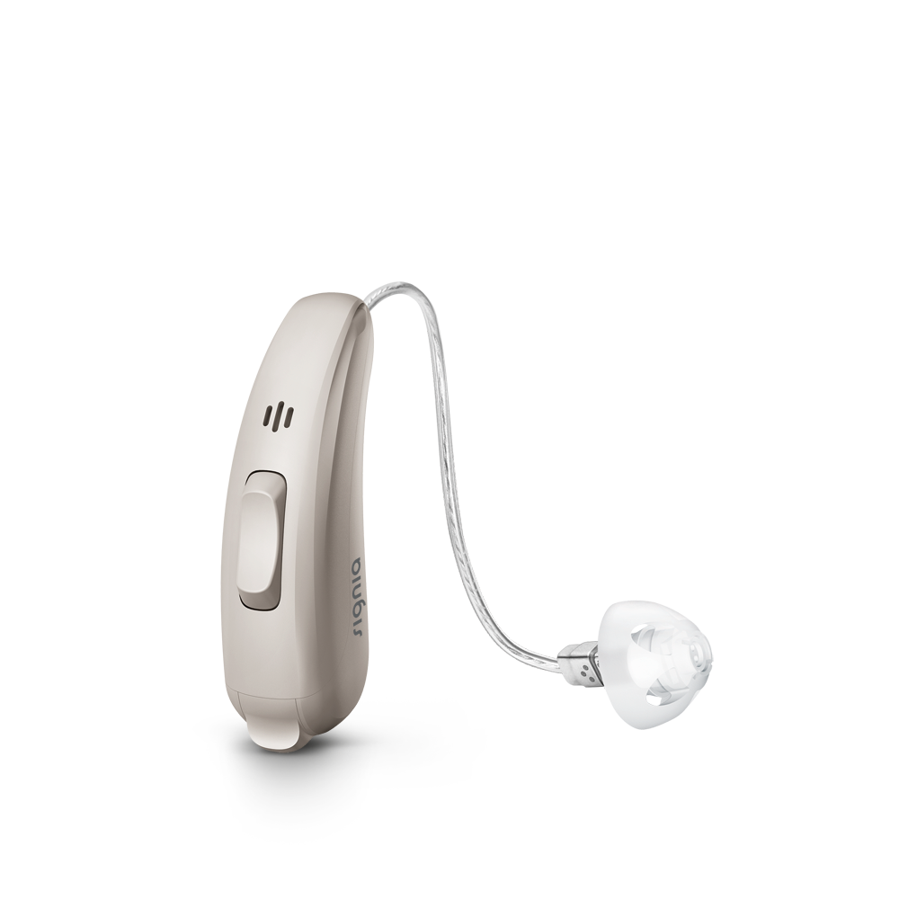
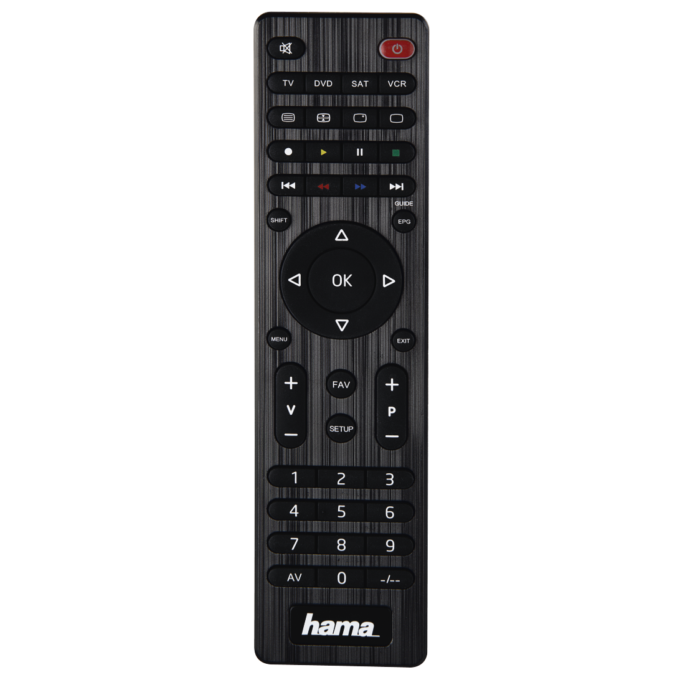
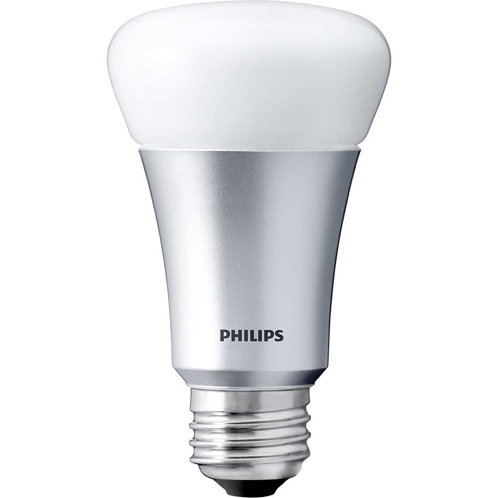
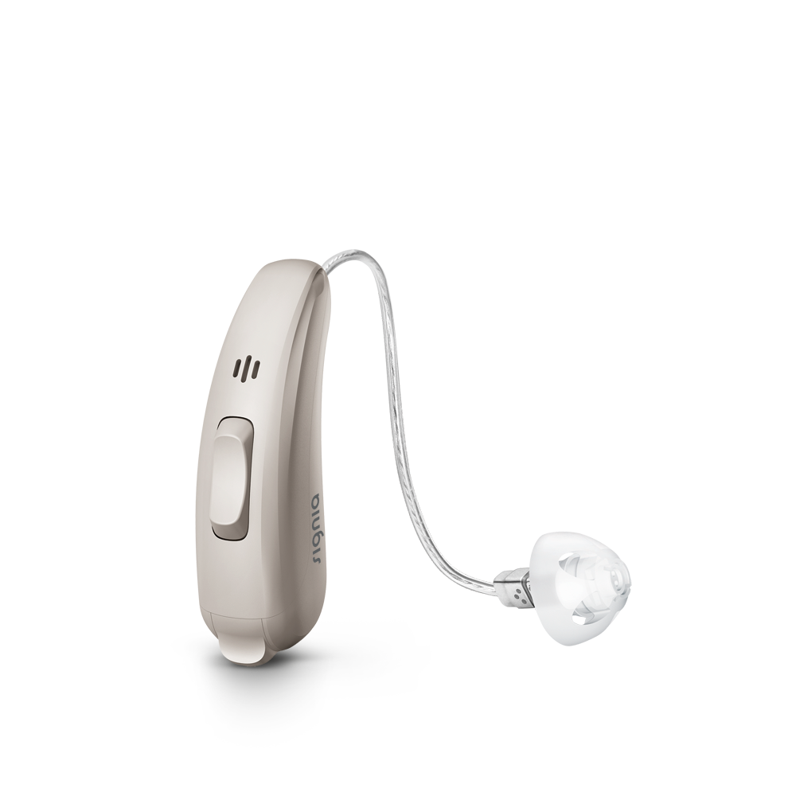
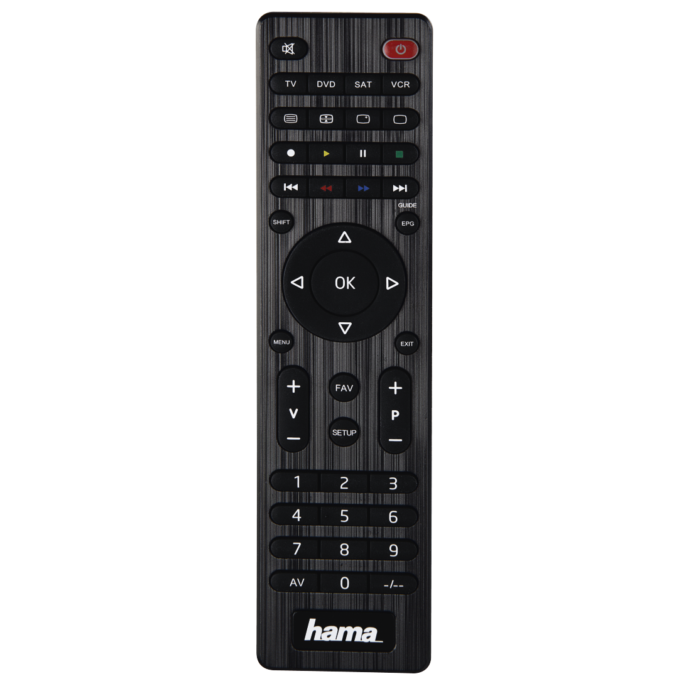
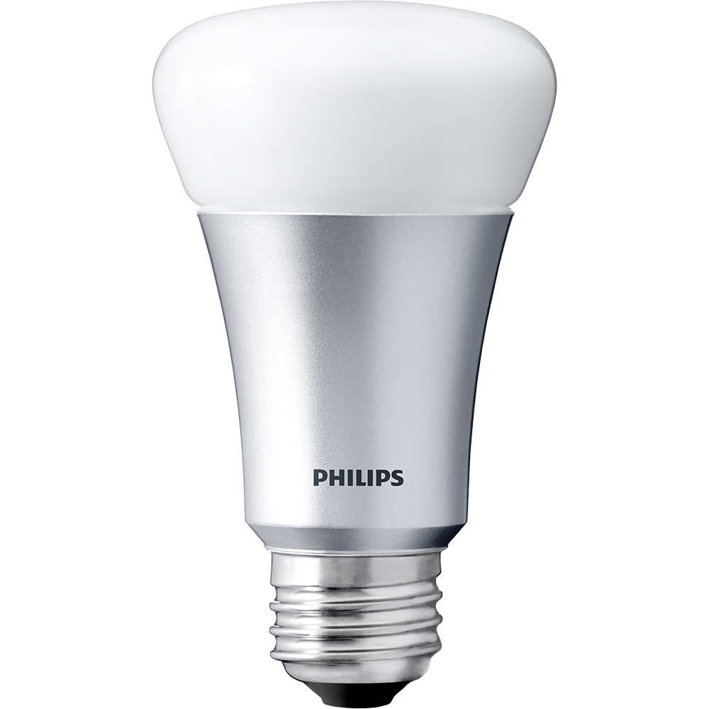
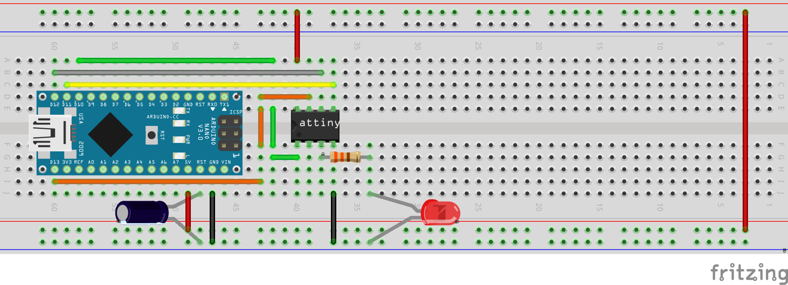
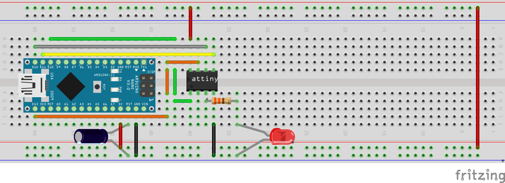

Wat is een microcontroller
- Een Integrated Circuit dat een computer systeem bevat.
- Het is geen CPU maar het bevat er één
- Tot op een zekere hoogte is een microcontroller "self-sustaining"
- Er zijn nog enkele randcomponenten nodig zoals een voeding, programmer, ...


 







 
